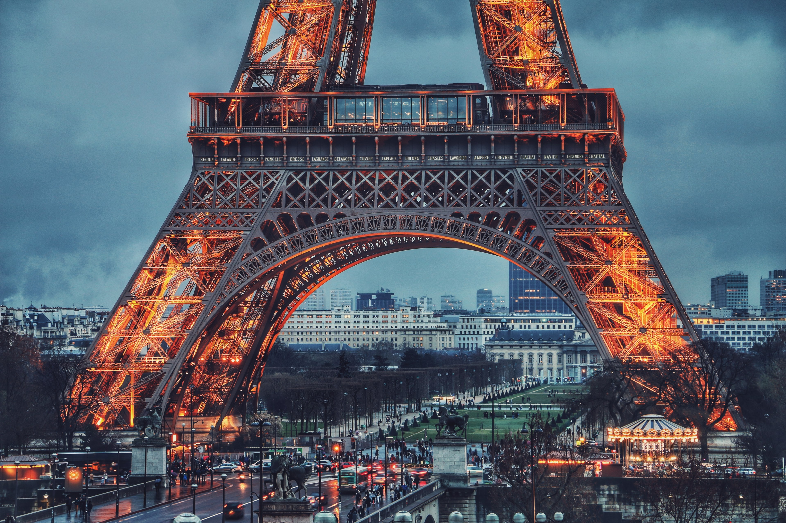
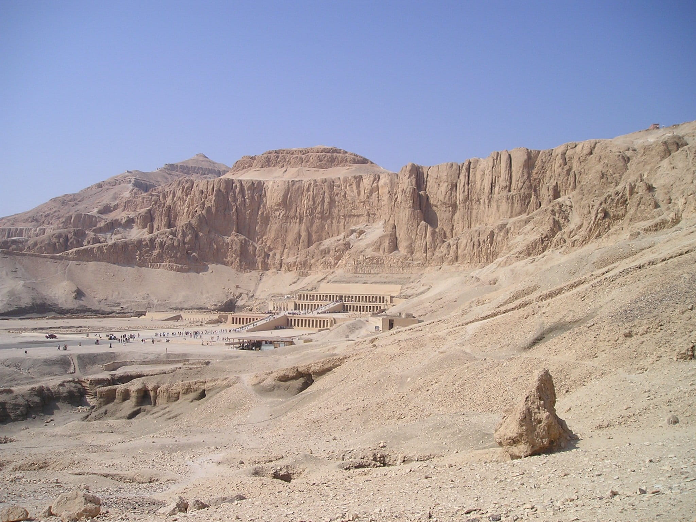
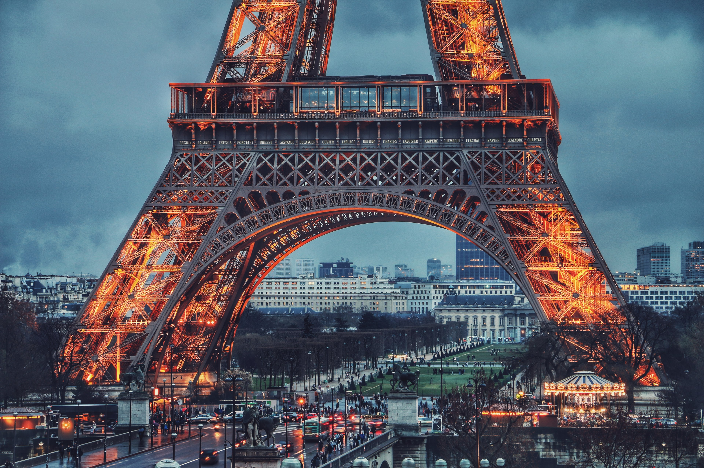
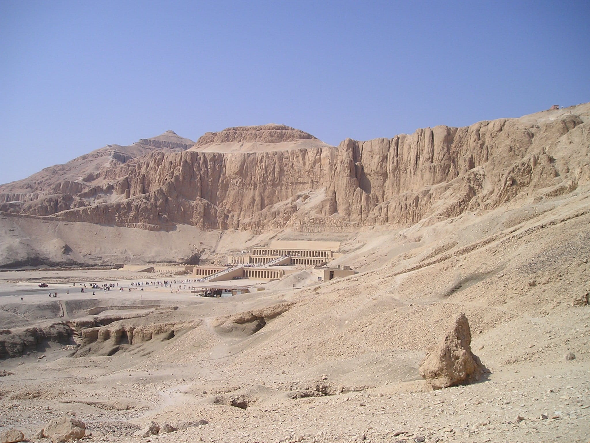

Phone
+20122222222
business@mail
On the banks of the Seine, in Paris, stands the Eiffel Tower, a magnificent iron structure that illuminates Paris and, more generally, France. If only one French architectural element were to represent this country, it would undoubtedly be, well before other monuments yet equally prestigious, but less emblematic: The Louvre, the Pont du Gard, the Gothic cathedrals or the Loire castles. Even famous sites such as the Arc de Triomphe do not manage to symbolize France as the Eiffel Tower does, it means its importance for the international fame of this country.
The Eiffel tower is a puddled iron structure, an iron that has lost some of its carbon and therefore rusts less quickly.
It is pyramidal in shape with slightly curved sides.
It measures 324m high and is divided into 4 parts separated by a floor.
Until the second floor the tower is made of 4 distinct pillars, but from there they join in a single pylon which rises vertically to the top.
The floors are successively at altitudes of 57m, 115m and 276m. There is an intermediate stage, between the second and third, but it is unused nowadays. In the 19th and early 20th century, it served as a trans-shipment platform for the passengers going to the top because the elevators were not able to rise so high at one time.
The tower is decorated with arcades on the level of the first floor and each floor has different buildings: restaurants, shops, museums, observation galleries, and even, in the winter, an ice rink.
The elevators facilitate the rise of the visitors but it is possible to climb the tower by the staircase up to the 2nd floor.
The Eiffel Tower is built in the axis of the Paris Mars Field, which is itself oriented at approximately 45 ° to the meridian. By building a square base tower, the four pillars are focused on the 4 cardinal points. So there is naturally a North pillar, a West, a South and an East. In order to be more technical, Gustave Eiffel and his engineers had numbered them from 1 to 4, in this order, but nowadays it is a notion that has been lost.
The rest of this document is the descriptive text given by Gustave Eiffel in his book, "La tower de 300m". It is much more precise, rather technical, and of a style of the late nineteenth century which may seem a little heavy at times.
> general shape
From a general point of view, the Eiffel Tower is a 4-sided pyramid-shaped metal structure, each side of which is slightly concavely curved (see Board I, Figures 1 and 2). It is divided in height into 4 parts. The lower part, between the floor and the first floor (57.63 m), the second between the first and second floor (115.73 m from the ground), the third between the second and third floor (located at 276.13 m) and the fourth from the third to the top (324 m above ground)
The origin of the construction of the Eiffel Tower lies in the will of men to want to rise in the air. Always higher, every civilization has tried to build at least one building very high, as high as possible. But this race has its limits, those of building materials. Until the pre-industrial era the only materials capable of supporting the heavy loads inherent in tall buildings was stone, mostly granite known for its strength. But in the industrial era everything changes. The appearance of metal as a material applicable to the construction of buildings makes it possible to overcome the weight of the building itself, and it is quite natural that the wildest hypotheses circulated about the new possibilities offered to the domain of 'the valley. One of these hypotheses, probably the most plausible yet impressive, was to build a 1000-foot-high building, more than 300 m. While the architects were planning to construct such a tower, the engineers looked at the various forging, riveting techniques and the different metals that could be used for construction. We are in the second part of the nineteenth century, and an engineer is going to make a specialty of the construction of iron bridges: Gustave Eiffel. Gustave Eiffel, after having made his arms in a study firm where he realized his first bridges, worked independently then created his own company which will multiply the work all over the world. In 1884 his construction company is flourishing, it has many projects, several construction sites open. He built bridges, stations, pylons, and even the internal structure of the Statue of Liberty. Obviously his company operates with a large number of employees, a strict hierarchy, as it was in the nineteenth century, and effective men at the head of the services. This is where the tower actually begins. Maurice Koechlin was the head of the design office of the Eiffel company. Émile Nouguier, it was the head of the office of the methods, in charge of establishing real means for the construction of the structures. They conceived the plan of a 300-meter-high iron tower, responding to the technical challenge implicitly launched by the architectural community in the world. It was not the first project, but it was relatively realistic. It was in the form of a pyramid made up of 4 metal piles joining at the top. The 4 stacks were joined together by a plate every 50 meters, so there were 5, smaller and smaller. Despite everything Gustave Eiffel refuses to make this tower, but encourages them to continue their studies on this subject. It should be said that the Universal Exhibition of 1889 was already planned, and that he had in mind to build this tower as gateway to the exhibition entrance. It was a project of buildup, because not only was he not sure of being able to build this tower, but he still had to be allowed to do it, and that he also had material time . Still, the first project of Nouguier and Koechlin, presented in June 1884, was refused. Then came Stephen Sauvestre in the project, an architect who reviewed the design thanks to an eye both new and architect. It is no longer an engineering project but an architect's project, and this difference makes everything, in the eyes of Eiffel. Sauvestre redraws the plans, moves the piles of masonry pedestals, curves the batteries a little more than it was on the foreground and binds them by two platforms, one halfway up the junction of the piers, l at the junction. It adds a 3rd holding platform to the top and adds arches that ensure the solidity of the base. It also modifies the aesthetics a little by adding a bell tower at the top.
>Transport
The nearest Paris Métro station is Bir-Hakeim and the nearest RER station is Champ de Mars-Tour Eiffel. The tower itself is located at the intersection of the quai Branly and the Pont d'Iéna.
>Popularity
Number of visitors per year between 1889 and 2004
More than 250 million people have visited the tower since it was completed in 1889. In 2015, there were 6.91 million visitors. The tower is the most-visited paid monument in the world. An average of 25,000 people ascend the tower every day which can result in long queues.
>Restaurants
The tower has two restaurants: Le 58 Tour Eiffel on the first level, and Le Jules Verne, a gourmet restaurant with its own lift on the second level. This restaurant has one star in the Michelin Red Guide. It was run by the multi-Michelin star chef Alain Ducasse from 2007 to 2017. Starting May 2019, it will be managed by three-star chef Frédéric Anton. It owes its name to the famous science-fiction writer Jules Verne. Additionally, there is a champagne bar at the top of the Eiffel Tower.
From 1937 until 1981, there was a restaurant near the top of the tower. It was removed due to structural considerations; engineers had determined it was too heavy and was causing the tower to sag. This restaurant was sold to an American restaurateur and transported to New York and then New Orleans. It was rebuilt on the edge of New Orleans' Garden District as a restaurant and later event hall.
 



+20122222222
business@mail